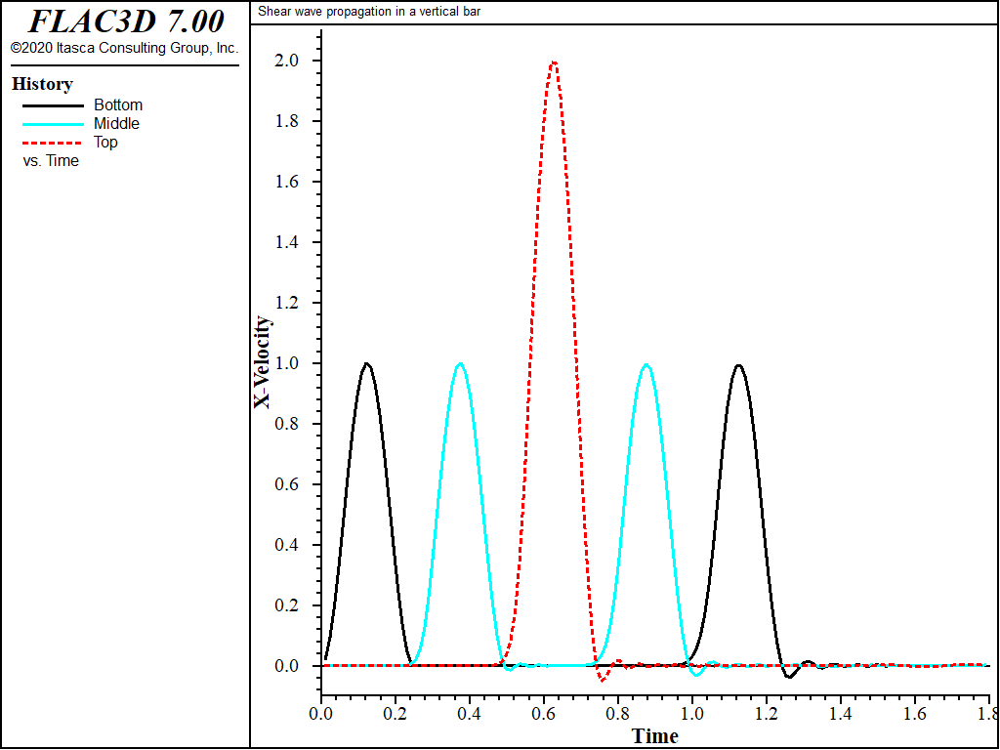

竖向杆中的剪切波传播
注意
要在 FLAC3D 中查看此项目，请使用菜单命令 。选择“Dynamic/ ShearWaveOnVerticalBar”并选择“ShearWaveOnVerticalBar.f3prj”以加载。 主数据文件见本示例末尾（main data files）。其余数据文件可在项目中找到。
这是一个为说明在 quiet 边界进行波输入而建立的小型简单示例。 将一个脉冲作为应力时程施加到高 50 m 的竖向杆底部。 杆底在两个水平方向均声明为“quiet”，顶部为自由面。 所选特性使剪切波速为 100 m/sec，且乘积 \(\rho C_s\) 为 105。因此，根据把法向速度换算为 施加法向应力的关系式（the relation that converts normal velocity to applied normal stress），将应力脉冲幅值设为 2 \(\times\) 105，以便在杆中产生 1 m/sec 的速度 幅值。图 1（Figure 1） 显示了土柱底部、中部和顶部的 \(x\) 方向速度时间历史。可以看出，向外传播波的幅值为 1 m/sec，符合预期。 图 1（Figure 1） 中的前三个脉冲依次对应于底部、中部和顶部的 向外传播波。最后两个脉冲对应于从自由表面反射的波，分别在 中部和底部测得。可以看到自由表面的速度加倍效应， 也能看到约 1.3 秒之后不再有波，这证实 quiet 底部工作正常。


图 1：杆中的入射波和反射波——通过 quiet 边界施加应力输入。
数据文件
ShearWaveOnVerticalBar.dat
;---------------------------------------------------------------------
; 动力问题所用脚本文件
; 竖直杆中的剪切波传播
;---------------------------------------------------------------------
model new
model large-strain off
fish automatic-create off
model title "Shear wave propagation in a vertical bar"
model config dynamic
;
; 创建网格单元
zone create brick size 1,1,50
zone face skin ; 命名边界
;
; 分配模型和属性
zone cmodel assign elastic
zone property shear 1e7 bulk 2e7 density 1000
;
; 边界条件
zone gridpoint fix velocity-z
zone face apply quiet-dip range group 'Bottom'
zone face apply quiet-strike range group 'Bottom'
fish define wave
wave = 0.5 * ...
(1.0 - math.cos(8.0*math.pi*math.min(zone.dynamic.time.total,0.25)))
end
zone face apply stress-xz -2e5 fish wave range group 'Bottom'
;
; 历史
zone history name='bot' velocity-x position (0,0, 0)
zone history name='mid' velocity-x position (0,0,25)
zone history name='top' velocity-x position (0,0,50)
model history name='time' dynamic time-total
;
; 求解至时间 1.8
model solve time-total 1.8
model save 'ShearWaveOnVerticalBar'
| 这些内容对您有帮助吗？… | FLAC3D © 2019, Itasca | 原文更新于 2020 年 10 月 8 日 |